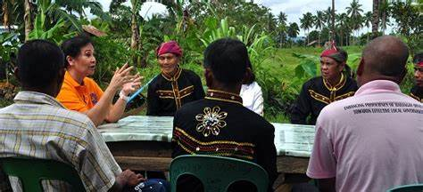
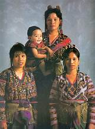
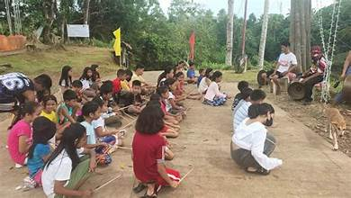
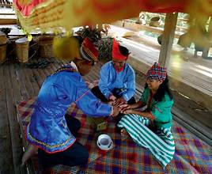
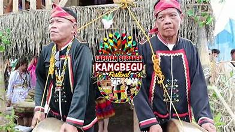
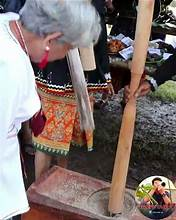

Zamboanga del Sur is home to a diverse mix of ethnic groups that have coexisted — sometimes in tension, often in harmony — over centuries. The three main communities are the indigenous Subanen, the Muslim Moro peoples, and Christian settler migrants.
The Subanen are the largest indigenous people (IP) group in Zamboanga del Sur. Their name means "river people," reflecting their historical settlement along river systems. They practice traditional agriculture, animist spiritual rituals, and maintain their own language and governance systems called timuay.
Muslim communities in the province include the Yakan, Tausug, and Maranao peoples, among others. They have strong traditions in trade, seafaring, and Islamic scholarship. Their presence dates back centuries and has shaped the coastal culture of the province.
The majority of the lowland population consists of Christian settlers who migrated primarily from the Visayas — particularly Cebu, Bohol, and Leyte — during the 20th century. They brought with them Cebuano language, Catholic faith, and Visayan cultural practices.
While ethnic and religious differences have at times been a source of tension, daily life in most communities is marked by peaceful coexistence and cultural exchange. Intermarriage, shared markets, and joint community events reflect the integration of diverse groups.
The National Commission on Indigenous Peoples (NCIP) implements programs to protect the rights, lands, and cultural heritage of indigenous communities in the province. Ancestral domain claims and IP education programs are active in several municipalities.


